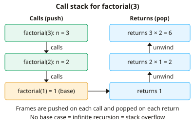

A-level Computer Science Year 13 · Topic 8
Algorithms and problem solving
Algorithms and problem solving is about the strategies programmers use to crack hard problems.
We will use recursion, divide and conquer, backtracking and heuristics.
Then we apply computational methods like data mining and performance modelling, abstraction and automation, and a systematic approach from analysis to evaluation.
- 6 subtopics
- 151 questions
- Free: 8.1 notes and 10 questions
In this topic
- 8.1Recursion and recursive algorithmsFree below · 24 questions
- 8.2Divide and conquer, backtracking and heuristicsOpen in Full Marks · 25 questions
- 8.3Computational methods: problem recognition, decomposition, data mining, performance modelling and visualisationOpen in Full Marks · 25 questions
- 8.4Abstraction, automation and computational thinkingOpen in Full Marks · 29 questions
- 8.5Systematic approach to problem solving: analysis, design, implementation, testing and evaluationOpen in Full Marks · 25 questions
- 8.6Artificial intelligence: graphs, Dijkstra's and A* algorithms, and machine learningOpen in Full Marks · 23 questions
8.1 · Free notes
Recursion and recursive algorithms

Key points
- Recursion is when a subroutine is defined in terms of itself and calls itself with a smaller or simpler version of the problem until it can be solved directly.
- Every recursive subroutine needs a base case (stopping condition) that returns without a further call, and a general case that calls itself on a problem closer to the base case. Without a reachable base case the recursion is infinite.
- Each call creates a stack frame on the call stack holding parameters, local variables and the return address. Frames are pushed on each call and popped on each return (LIFO).
- Too many nested calls, or a missing base case, exhausts the stack and causes a stack overflow. Recursion is limited by the stack size, so very deep recursion can fail where a loop would not.
- Standard example: factorial, n! = n × (n−1)!, with base case 0! = 1. Evaluating factorial(5) makes 6 calls, with the last one the base case. Results are then passed back during unwinding.
- To trace a recursive function, write out the calls going down (winding) until the base case, then substitute the return values back up (unwinding). Examiners expect this to be laid out step by step.
- Recursion suits problems that are naturally self-similar: tree traversal (pre-order, in-order, post-order), binary search, merge sort, quicksort, Towers of Hanoi (minimum 2ⁿ − 1 moves for n discs) and graph depth-first search.
- Compared with iteration, recursive code is usually shorter, more elegant and easier to prove correct. It uses more memory (one stack frame per call) and can be slower because of call overhead.
- Naive recursive Fibonacci, fib(n) = fib(n−1) + fib(n−2), recalculates the same values repeatedly and has exponential time complexity, O(2ⁿ). Memoisation stores results already calculated and reduces this to O(n).
- In tail recursion the recursive call is the last action performed, so some compilers can reuse the same frame. Any recursive algorithm can be rewritten iteratively, often using an explicit stack.
- Binary search recursively halves the search space each call, so the depth is about log₂ n. Searching 1024 items needs about 10 halvings.
In more detail
- Worked recursive binary search: search(list, target, low, high): if low > high return −1; mid ← (low + high) DIV 2; return mid if found, otherwise recurse on the correct half.
- Worked Towers of Hanoi: moving n discs takes 2ⁿ − 1 moves (7 for 3 discs): move n − 1 discs to the spare peg, move the largest, then move the n − 1 discs back on top.
- Worked power: power(2, 3) = 2 × power(2, 2) = 2 × 2 × power(2, 1) = 2 × 2 × 2 × power(2, 0) = 8.
- Worked memoisation: storing results cuts naive fib(30) from about 2.7 million calls to just 31.
- Recursion vs iteration: recursion is natural for trees and divide-and-conquer; iteration usually uses less memory.
Practice
Recursion and recursive algorithms: 10 questions
Pick an answer to check it, or open the answer for the explanation.
1. Which feature of a recursive subroutine stops it calling itself indefinitely?
- The return address
- The base case
- The general case
- The stack pointer
Show answer
B: The base case. The base case returns a value without making another recursive call. The general case makes the call, and each call must move closer to the base case.
2. fact(n) returns 1 when n = 0, otherwise n × fact(n − 1). How many calls to fact are made in total, including the first, when fact(5) is evaluated?
- 6
- 7
- 4
- 5
Show answer
A: 6. The calls are fact(5), fact(4), fact(3), fact(2), fact(1) and fact(0), which is 6. The call with n = 0 is the base case.
3. Where does a computer store the parameters, local variables and return address for each recursive call?
- On the call stack as a stack frame
- In a hash table
- In the processor's ALU
- In a queue in main memory
Show answer
A: On the call stack as a stack frame. Each call pushes a stack frame onto the call stack. When the call returns, its frame is popped (LIFO) and execution resumes at the stored return address.
4. A recursive function has no reachable base case. What is the most likely result when it runs?
- A stack overflow
- It returns 0
- It runs once and stops
- A syntax error before running
Show answer
A: A stack overflow. Calls keep being pushed onto the call stack with none returning, until the stack memory is exhausted and a stack overflow occurs.
5. def f(n): if n == 0: return 0 else: return n + f(n - 1). What value does f(4) return?
- 6
- 4
- 10
- 24
Show answer
C: 10. f(4) = 4 + f(3) = 4 + 3 + f(2) = 4 + 3 + 2 + f(1) = 4 + 3 + 2 + 1 + f(0) = 10, since f(0) = 0.
6. What is the minimum number of moves needed to solve Towers of Hanoi with 5 discs?
- 31
- 10
- 32
- 25
Show answer
A: 31. The recursive solution gives moves(n) = 2 × moves(n−1) + 1, which is 2ⁿ − 1. For n = 5 this is 31.
7. Which statement comparing recursion with iteration is correct?
- Recursion is always faster
- Recursion usually needs more memory than the equivalent loop
- Iteration cannot solve recursive problems
- Recursion never uses extra memory
Show answer
B: Recursion usually needs more memory than the equivalent loop. Each recursive call adds a stack frame, so memory use grows with depth. A loop normally reuses the same variables. Any recursive algorithm can be written iteratively.
8. A binary tree has root 4. Its left child is 2 (children 1 and 3) and its right child is 6. What does a recursive in-order traversal output?
- 4 2 1 3 6
- 1 3 2 6 4
- 4 2 6 1 3
- 1 2 3 4 6
Show answer
D: 1 2 3 4 6. In-order is left subtree, node, right subtree, giving 1 2 3 4 6. Option 1 is pre-order, option 2 is post-order and option 3 is breadth-first.
9. A recursive binary search halves the list on every call. About how many halvings reduce a list of 1024 items to a single item?
- 32
- 1024
- 10
- 512
Show answer
C: 10. 1024 = 2¹⁰, so halving 10 times reaches size 1. Binary search therefore has O(log n) depth.
10. What is the purpose of memoisation in a recursive Fibonacci function?
- To remove the base case
- To convert it to a loop automatically
- To store results already calculated so they are not recomputed
- To increase the stack size
Show answer
C: To store results already calculated so they are not recomputed. Storing earlier results, for example in a dictionary, means each fib(k) is calculated once. The time falls from O(2ⁿ) to O(n).
Keep going in Full Marks
Full Marks has 24 questions on Recursion and recursive algorithms (14 more than here), set out in practice levels. You also get notes and 3D models for all 6 subtopics of Algorithms and problem solving, plus games, timed exams and past papers.
On your exam board
- AQATopic 1: Fundamentals of programming, Topic 3: Theory of computation, Topic 10: Systematic approach to problem solving
- OCRTopic 1.2: Software and software development, Topic 2.1: Elements of computational thinking, Topic 2.2: Problem solving and programming
- CambridgeTopic 18: Artificial intelligence (AI), Topic 19: Computational thinking and problem-solving